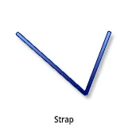
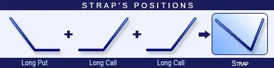
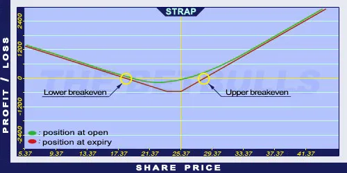

Description and use

Strap option is also version of the Long Straddle strategy. The difference here is an extra Long Call option. All components are ATM. Thus, trading Strip is more expensive and riskier than trading Long Straddle. The lower breakeven point is the strike price minus net debit. The net debit is higher than for the Long Straddle, because there are more Long Calls. The direction of the market is neutral/decreasing. The investor speculates on increasing volatility. The strategy is a net debit investment. The maximum loss is the amount of net debit, and the maximum profit is unlimited. The optimal maturity is three months. If the share prices aren’t moving, the position should be sold one month before expiration.
- Type: Neutral, Bullish
- Transaction type: Debit
- Maximum profit: Unlimited
- Maximum loss: Limited
- Strategy: Volatility strategy
Opening the Position

Strap Option Positions
Strap Option Positions involve buying one (ATM) Put option and two (ATM) Call options with the same expiration and strike price as the Put option’s.
Steps
Entry:
- Look for shares showing pennant or similar shapes on charts.
Exit:
- When share prices are increasing, sell the Call option.
- When share prices are decreasing, sell the Put option.
Basic Characteristics
- Maximum loss: Net debit.
- Maximum profit: Unlimited.
- Time decay: Time decay has a negative effect on the value.
- Lower breakeven point: Strike price - Net debit.
- Upper breakeven point: Strike price + (Net debit / 2).
Advantages and Disadvantages
Advantages:
- Profit is generated when the share price changes in any direction.
- Limited loss.
- The profit is potentially unlimited when share prices are moving.
Disadvantages:
- Expensive.
- The share price must change significantly to generate profit.
- High Bid/Offer spread can have a negative influence on the position.
Closing the Position
Sell the Call and Put options.
Mitigation of Losses
Sell the position when there is one month left until expiry.
Example

Strap strategy example
- ABCD is traded for $25.37 on 17. 05. 2017. The investor buys a Long Put option which has a strike price of $25.00, expires in August 2017. and costs $1.70 (premium). Then, buys 2 Long Call options which have a strike price of $25.00, expire in August 2017. and cost $2.40 (premium).
- Price of the underlying (share price): S= $25.37
- Premium (Long Put): P= $1.70
- Premium (Long Call): C= $2.40
- Strike price (Long Put): KP= $25.00
- Strike price (Long Call): KC= $25.00
- Net debit: ND
- Maximum loss: R
- Maximum profit: Pr
- Lower breakeven point: LBEP
- Upper breakeven point: UBEP
- Net debit: ND = P + (2*C)
- Maximum loss (risk): R = ND
- Maximum profit: Pr = unlimited
- Lower breakeven point: LBEP = K - ND, where K = KP = KC
- Upper breakeven point: UBEP = K + (ND/2)
- ND = $6.50
- R = $6.50
- Pr = unlimited
- LBEP = $18.50
- UBEP = $28.25